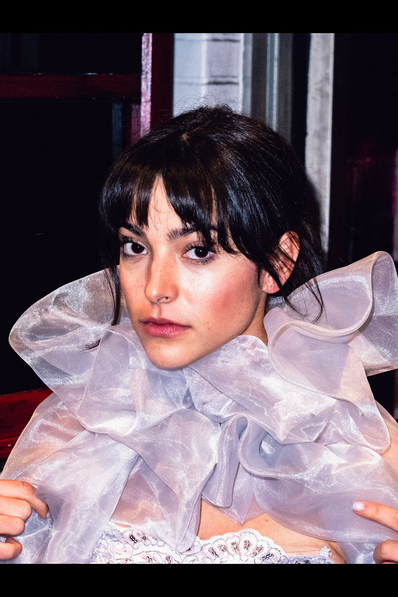
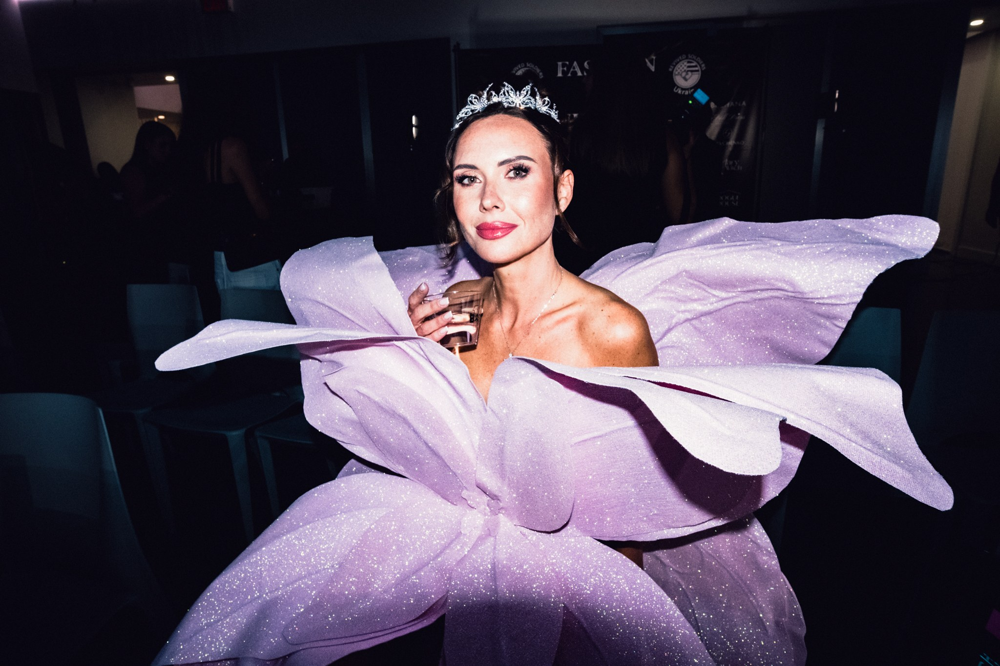
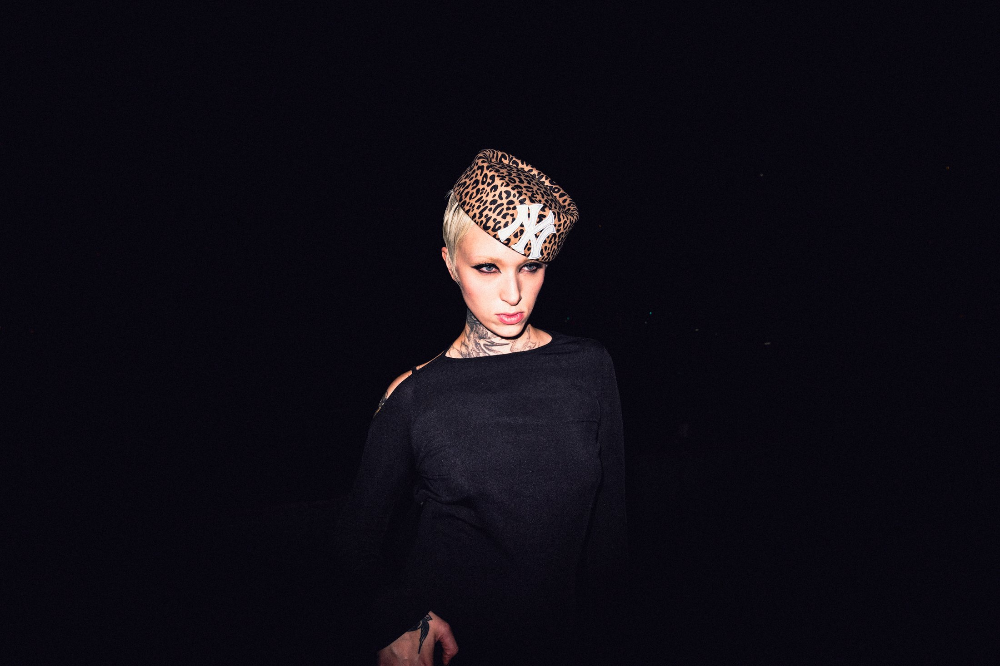
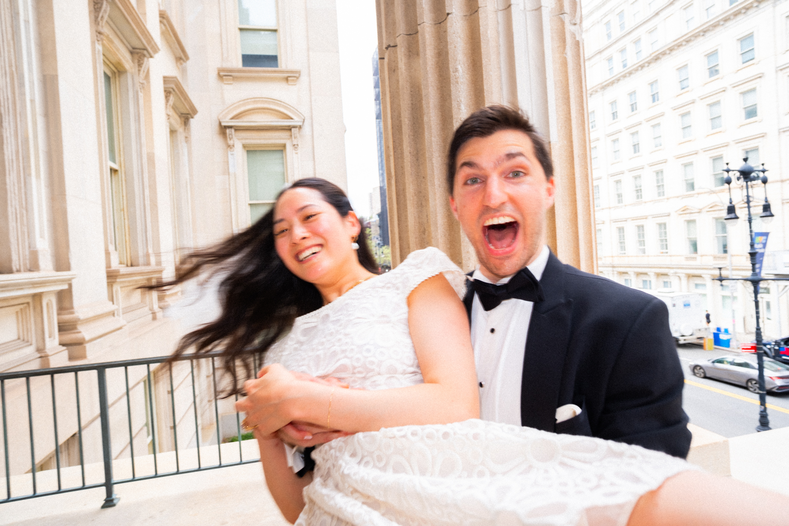
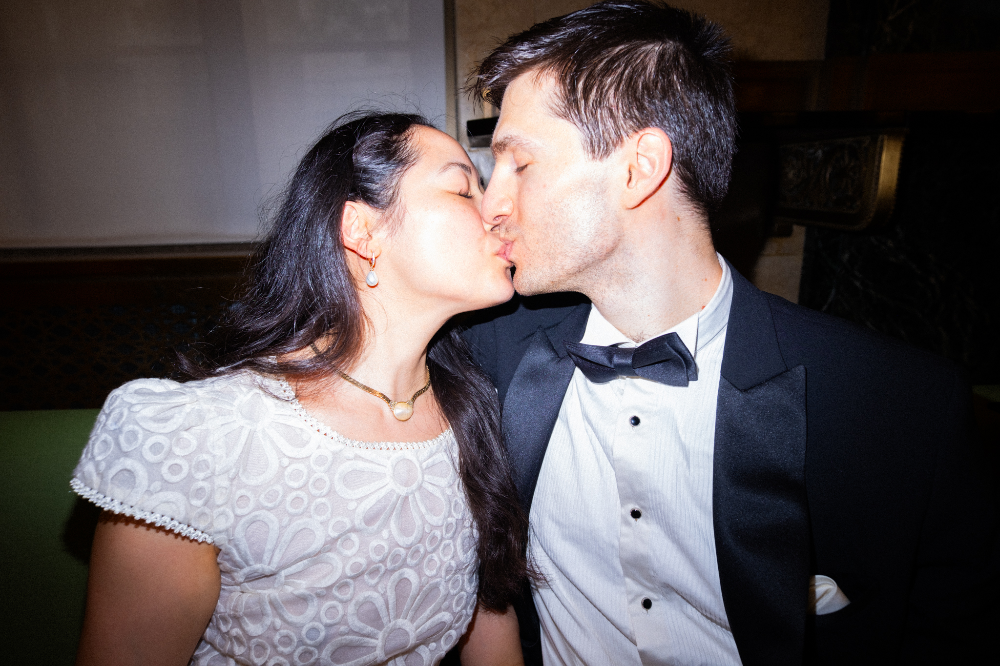
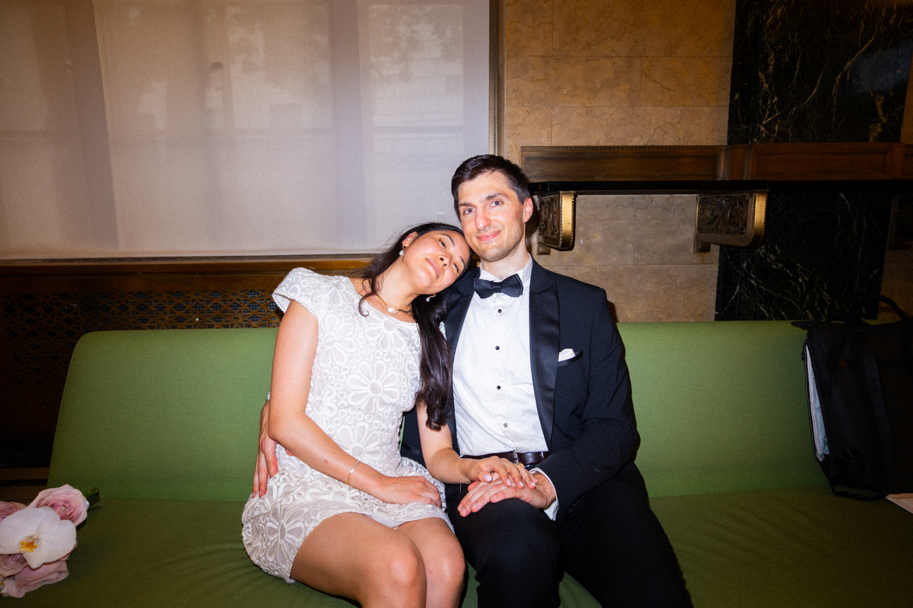
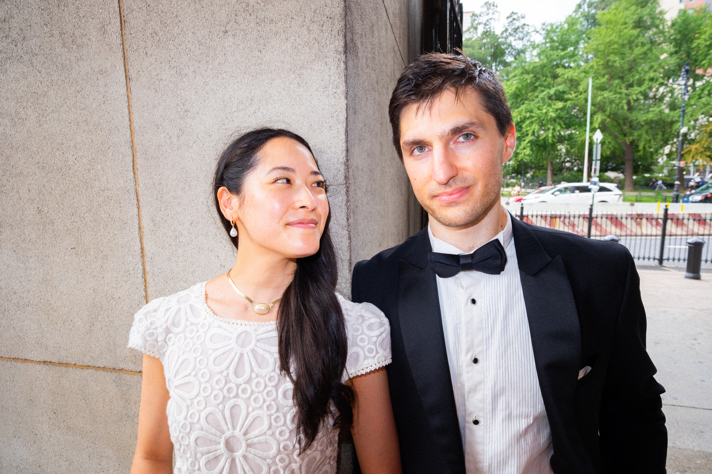
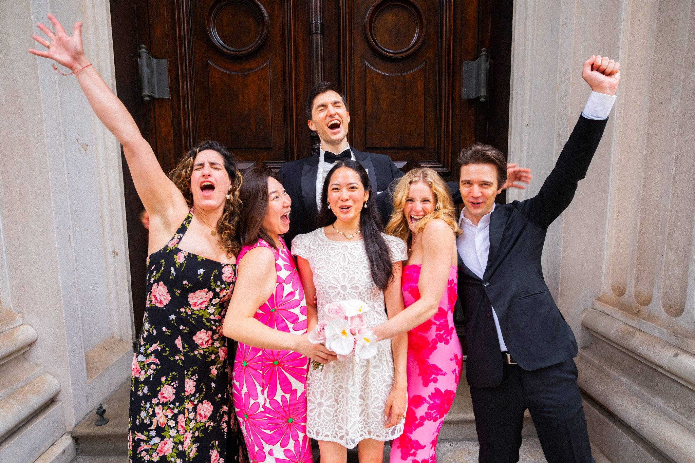
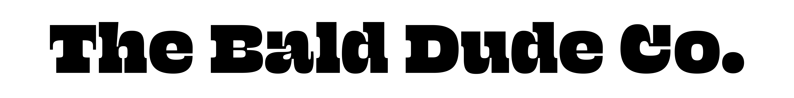

The Bald Dude Co. is the photography studio of Justin von Braun, a Brooklyn-based photographer creating direct-flash portraits, event coverage, and courthouse wedding stories.
Brooklyn, NY
Available worldwide
NYC EditorialPhotographer
Bold, immediate images for fashion, events, weddings, brands, and people who want to be seen.
40.7128° N / 74.0060° W
Portraits Events Weddings
Sony Focus Show / NYC
View myworkarrow_outward
New York City photography services
Photography for people, events, and brands.
I’m Justin von Braun, a Brooklyn-based photographer working in direct flash, editorial portraiture, event coverage, fashion, courthouse weddings, and commercial photography.
Available in New York City and worldwide.
Explore photography servicesNYC
photography.
Selected archive / 2026
001—005





See the
work in context.
Selected project stories
Paparazzi weddings / New York
Vows
in print.
Courthouse exits. Sidewalk kisses. The people who came running. Wedding photography with paparazzi instinct and an editorial finish—so the day still feels completely yours, only ready for the cover.
Make the day magazine-worthy Read the NYC courthouse wedding story




The flash
keeps moving.
Motion archive / sound off, pulse on
Three different cuts. Three different rooms. No repeated frames.
No velvet rope required.
Beautiful
Disorder
 After hours
After hoursNew York, New York

The photographer / 01
Justin von Braun, NYC photographer.
I’m Justin von Braun—a Brooklyn-based photographer, videographer, and founder of The Bald Dude Co. I specialize in direct-flash editorial photography for fashion, events, portraits, courthouse weddings, and commercial campaigns.
I photograph people and brands who want their images polished but never overly controlled—alive, expressive, and full of presence. Whether I’m backstage, on a red carpet, outside a courthouse, in the middle of a dance floor, or working the sidewalk, I combine decisive light with instinctive direction and an eye for the moments that cannot be staged.
The goal is never just documentation. I photograph every event with the energy, polish, and point of view of an editorial, while making every person in front of my camera feel confident, seen, and worth remembering.
Photography services in New York City
Hire me for
Bookings / collaborations / beautiful trouble